Event Storming — Sistema Integrado da Oficina
Ator: roxo · Comando: azul · Evento: laranja · Política: lilás · Agregado: amarelo.
1. Criação da Ordem de Serviço
- CPF/CNPJ e placa são validados e normalizados.
- Uma placa existente não pode ser associada a outro cliente.
- Preço e descrição são copiados para preservar o orçamento.
2. Acompanhamento, orçamento e execução

- Rejeição não movimenta estoque e permite revisar os itens ou devolver o veículo.
- Aprovação bloqueia primeiro a OS e depois as peças na mesma transação.
- A máquina de estados recusa saltos e repetições inválidas.
3. Gestão de peças e insumos
- Todo ajuste gera um movimento com motivo.
- Bloqueio de linha e constraint impedem saldo negativo.
- Estoque é suporte CRUD/transacional, não um agregado rico no código.